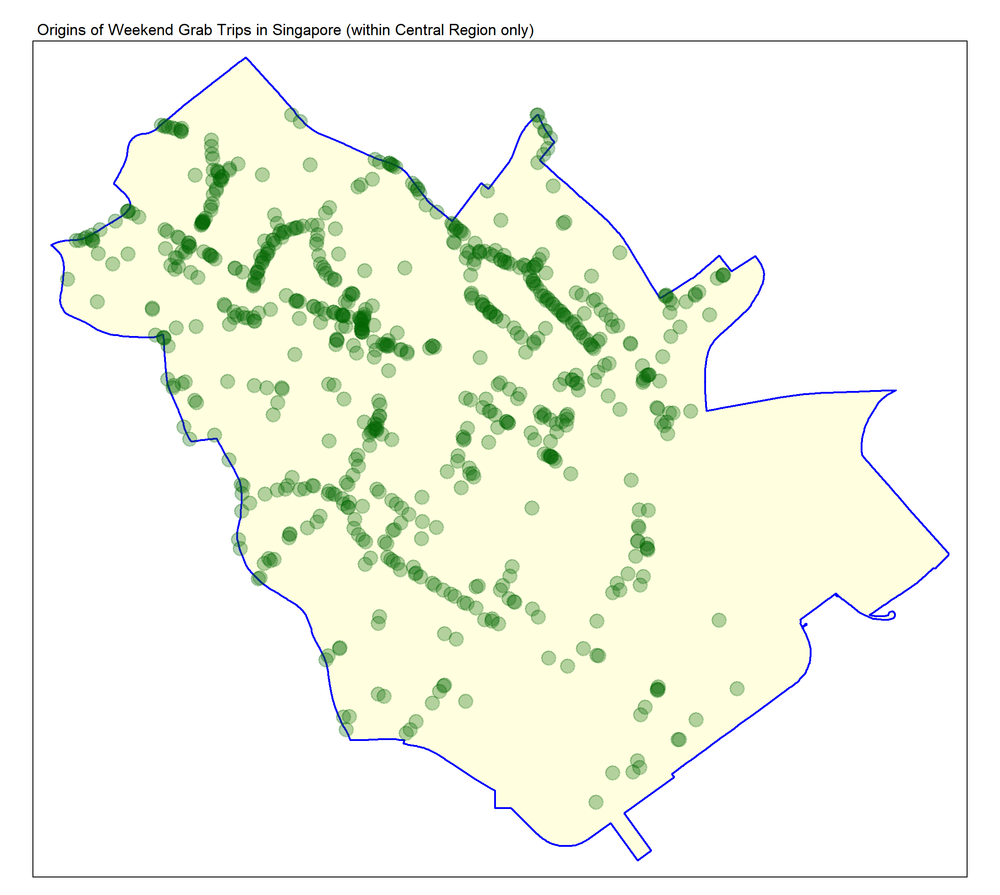
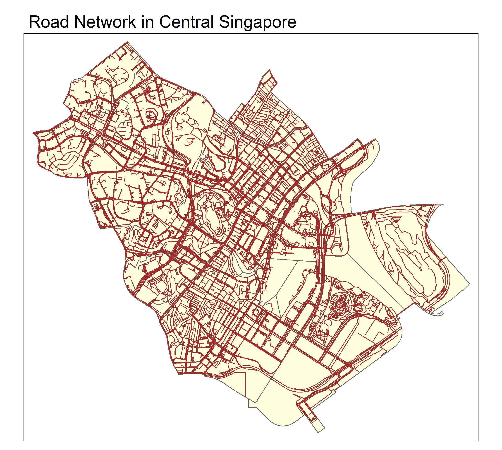

Reveal Code
pacman::p_load(sf, tidyverse, arrow, lubridate, tmap, maptools, spatstat, spNetwork, htmlwidgets)pacman::p_load(sf, tidyverse, arrow, lubridate, tmap, maptools, spatstat, spNetwork, htmlwidgets)The Grab-Posisi data is contained within 10 segmented parquet files, thus, the read_parquet function from the Arrow package is required. Upon loading, the files are combined into 1 large dataset and saved.
grab_df <- read_parquet("Data/Geospatial/GrabPosisi/part-00000-8bbff892-97d2-4011-9961-703e38972569.c000.snappy.parquet")
for (i in 1:9) {
grab_df <- grab_df %>%
rbind(read_parquet(paste0("Data/Geospatial/GrabPosisi/part-0000", as.character(i), "-8bbff892-97d2-4011-9961-703e38972569.c000.snappy.parquet")))
}We can see that the Grab-Posisi dataset in its entirety is way too large for computation.
glimpse(grab_df)
grab_df$pingtimestamp <- as_datetime(grab_df$pingtimestamp)
Grab-Posisi is stored here in case there is a need for it in its entirety.
write_parquet(grab_df, "Data/Geospatial/GrabPosisi/Grab_Posisi.parquet")As we are interested in the analysis of only the origins of Grab calls in Singapore, the Grab-Posisi data is subset here to reduce the size of the dataframe in the R-Environment to the necessary only.
grab_origin_df <- grab_df %>%
group_by(trj_id) %>%
arrange(pingtimestamp) %>%
filter(row_number() == 1) %>%
mutate(weekday = wday(pingtimestamp, label = TRUE, abbr = TRUE), start_hr = factor(hour(pingtimestamp)), day = factor(mday(pingtimestamp)))
glimpse(grab_origin_df)
write_rds(grab_origin_df, "Data/Geospatial/RDS/Grab_Origins_Posisi.rds")
grab_origin_df <- read_rds("Data/Geospatial/RDS/Grab_Origins_Posisi.rds")mpsz2019 <-
st_read("Data/Geospatial/MPSZ-2019", layer = "MPSZ-2019") %>%
st_transform(crs = 3414)Reading layer `MPSZ-2019' from data source
`C:\Users\yungq\Desktop\SMU Modules\Y4S1\Geospatial Analysis and Applications\IS415 Course Website\Take-Home_Exercise\Take-Home_Exercise_01\Data\Geospatial\MPSZ-2019'
using driver `ESRI Shapefile'
Simple feature collection with 332 features and 6 fields
Geometry type: MULTIPOLYGON
Dimension: XY
Bounding box: xmin: 103.6057 ymin: 1.158699 xmax: 104.0885 ymax: 1.470775
Geodetic CRS: WGS 84summary(mpsz2019) SUBZONE_N SUBZONE_C PLN_AREA_N PLN_AREA_C
Length:332 Length:332 Length:332 Length:332
Class :character Class :character Class :character Class :character
Mode :character Mode :character Mode :character Mode :character
REGION_N REGION_C geometry
Length:332 Length:332 MULTIPOLYGON :332
Class :character Class :character epsg:3414 : 0
Mode :character Mode :character +proj=tmer...: 0 roads <-
st_read("Data/Geospatial/OSM", layer = "gis_osm_roads_free_1") %>%
st_transform(crs = 3414)
summary(roads)Plotting the Master-Plan Subzone geospatial data for visualisation
mpsz2019_plot <- mpsz2019 %>%
tm_shape() +
tm_polygons(col = "lightyellow", border.col = "navy") +
tm_layout(main.title = "Singapore Master Plan Boundaries 2019", main.title.size = 1) + tm_compass(size = 1)
tmap_save(tm = mpsz2019_plot, "Screenshots/mpsz2019.png")
From the plot, we can see that the Master-Plan Subzone Data includes the outer islands of Singapore.
To observe if it is impactful, we plot the road network upon the previous layer.
mpsz_w_roads2019_plot <-
tm_shape(mpsz2019) +
tm_polygons(col = "lightyellow", border.col = "orange", border.alpha = 0.6) + tm_layout(main.title = "Singapore Road Network 2019", main.title.size = 1) +
tm_compass(size = 1) +
tm_shape(roads) +
tm_lines()
tmap_save(tm = mpsz_w_roads2019_plot, "Screenshots/mpsz_w_roads2019.png")Here we can observe that there are road networks present outside the mainland in the dataset. Thus, we need to remove them if mainland Singapore is the scope of the study. First though, we should investigate the Grab-Posisi Data further.
grab_origin_sf <- grab_origin_df %>%
st_as_sf(coords = c("rawlng", "rawlat"), crs = 4326) %>%
st_transform(crs = 3414)
summary(grab_origin_sf) trj_id driving_mode osname
Length:28000 Length:28000 Length:28000
Class :character Class :character Class :character
Mode :character Mode :character Mode :character
pingtimestamp speed bearing
Min. :2019-04-08 00:09:26.00 Min. :-1.000 Min. : 0.0
1st Qu.:2019-04-11 08:48:29.25 1st Qu.: 3.590 1st Qu.: 90.0
Median :2019-04-15 00:08:48.00 Median : 9.945 Median :179.0
Mean :2019-04-14 21:29:59.93 Mean : 9.566 Mean :172.5
3rd Qu.:2019-04-18 10:47:59.25 3rd Qu.:14.550 3rd Qu.:256.0
Max. :2019-04-21 23:33:28.00 Max. :30.949 Max. :359.0
accuracy weekday start_hr day
Min. : 1.000 Sun:3983 9 : 2104 17 : 2012
1st Qu.: 3.900 Mon:3975 10 : 2104 18 : 2008
Median : 6.000 Tue:4008 0 : 1941 12 : 2007
Mean : 7.617 Wed:4016 1 : 1919 9 : 2004
3rd Qu.: 10.000 Thu:4008 8 : 1541 16 : 2004
Max. :728.000 Fri:4002 7 : 1539 13 : 2004
Sat:4008 (Other):16852 (Other):15961
geometry
POINT :28000
epsg:3414 : 0
+proj=tmer...: 0
grab_origin_spatial <- grab_origin_sf %>%
as_Spatial()
summary(grab_origin_spatial)Object of class SpatialPointsDataFrame
Coordinates:
min max
coords.x1 3628.243 49845.23
coords.x2 25198.140 49689.64
Is projected: TRUE
proj4string :
[+proj=tmerc +lat_0=1.36666666666667 +lon_0=103.833333333333 +k=1
+x_0=28001.642 +y_0=38744.572 +ellps=WGS84 +towgs84=0,0,0,0,0,0,0
+units=m +no_defs]
Number of points: 28000
Data attributes:
trj_id driving_mode osname
Length:28000 Length:28000 Length:28000
Class :character Class :character Class :character
Mode :character Mode :character Mode :character
pingtimestamp speed bearing
Min. :2019-04-08 00:09:26.00 Min. :-1.000 Min. : 0.0
1st Qu.:2019-04-11 08:48:29.25 1st Qu.: 3.590 1st Qu.: 90.0
Median :2019-04-15 00:08:48.00 Median : 9.945 Median :179.0
Mean :2019-04-14 21:29:59.93 Mean : 9.566 Mean :172.5
3rd Qu.:2019-04-18 10:47:59.25 3rd Qu.:14.550 3rd Qu.:256.0
Max. :2019-04-21 23:33:28.00 Max. :30.949 Max. :359.0
accuracy weekday start_hr day
Min. : 1.000 Sun:3983 9 : 2104 17 : 2012
1st Qu.: 3.900 Mon:3975 10 : 2104 18 : 2008
Median : 6.000 Tue:4008 0 : 1941 12 : 2007
Mean : 7.617 Wed:4016 1 : 1919 9 : 2004
3rd Qu.: 10.000 Thu:4008 8 : 1541 16 : 2004
Max. :728.000 Fri:4002 7 : 1539 13 : 2004
Sat:4008 (Other):16852 (Other):15961 grab_origin_sp <- grab_origin_spatial %>%
as("SpatialPoints")
summary(grab_origin_sp)Object of class SpatialPoints
Coordinates:
min max
coords.x1 3628.243 49845.23
coords.x2 25198.140 49689.64
Is projected: TRUE
proj4string :
[+proj=tmerc +lat_0=1.36666666666667 +lon_0=103.833333333333 +k=1
+x_0=28001.642 +y_0=38744.572 +ellps=WGS84 +towgs84=0,0,0,0,0,0,0
+units=m +no_defs]
Number of points: 28000grab_origin_ppp <- grab_origin_sp %>%
as("ppp")
summary(grab_origin_ppp)Planar point pattern: 28000 points
Average intensity 2.473666e-05 points per square unit
Coordinates are given to 3 decimal places
i.e. rounded to the nearest multiple of 0.001 units
Window: rectangle = [3628.24, 49845.23] x [25198.14, 49689.64] units
(46220 x 24490 units)
Window area = 1131920000 square unitsgrab_origins_interactive <- tm_shape(grab_origin_sf) +
tm_dots(alpha = 0.4, size = 0.03, col = "green") +
tm_layout(main.title = "Grab-Posisi Origin points across Singapore")
grab_origins_interactive = tmap_leaflet(grab_origins_interactive)
saveWidget(widget = grab_origins_interactive, file = "Screenshots/grab_origins_interactive.html")If we zoom in, it appears that there are little to no overlaps in the point coordinates in the data. To confirm,
any(duplicated(grab_origin_ppp))[1] FALSEThis is good as there is no need to account for point duplication in the dataset.
Now, we visualise the spread of the point of origins of Grab calls in Singapore.
grab_origin_sg_plot <- tm_shape(coastal_outline) +
tm_polygons(col = "lightyellow", border.col = "blue", lwd = 1.5) +
tm_layout(main.title = "Origins of Grab Trips in Singapore (within Mainland only)") +
tm_shape(grab_origin_sf) +
tm_dots(col = "darkgreen", alpha = 0.5)
tmap_save(grab_origin_sg_plot, "Screenshots/Grab_Origins_SG.png")
It is clear that the central region of Singapore handles more calls than other parts of the country. This of course makes sense as the central region is where the central business district lies, and considering the difference in cost of Grab vs. other forms of public transport, it should be expected that most customers of Grab fall within the CBD area.
Considering the size of the datasets and the complexity of the road network, it makes sense to try to limit the area of study so our machines can handle the computation reasonably. Considering the spread of the data, the central region is chosen as it focus area.
Only specific polygons within the “Central Region” is chosen to further narrow down the scope of study to a feasible size.
central_sg <- mpsz2019[mpsz2019$PLN_AREA_N %in% c("DOWNTOWN CORE", "MARINA EAST", "MARINA SOUTH", "MUSEUM", "NEWTON", "ORCHARD", "OUTRAM", "RIVER VALLEY", "ROCHOR", "SINGAPORE RIVER", "STRAITS VIEW"), ]
summary(central_sg) SUBZONE_N SUBZONE_C PLN_AREA_N PLN_AREA_C
Length:50 Length:50 Length:50 Length:50
Class :character Class :character Class :character Class :character
Mode :character Mode :character Mode :character Mode :character
REGION_N REGION_C geometry
Length:50 Length:50 MULTIPOLYGON :50
Class :character Class :character epsg:3414 : 0
Mode :character Mode :character +proj=tmer...: 0 central_region_plot <- tm_shape(mpsz2019) +
tm_polygons(col = "lightyellow", border.col = "navy") +
tm_layout(main.title = "Central Region of Singapore") +
tm_shape(central_sg) +
tm_polygons(col = "orange", border.col = "red")
tmap_save(central_region_plot, "Screenshots/central_region_SG.png")
central_sg <- st_union(central_sg)central_region_SG_outline <- tm_shape(mpsz2019) +
tm_polygons(col = "lightyellow", border.col = "navy") +
tm_layout(main.title = "Central Region of Singapore") +
tm_shape(central_sg) +
tm_polygons(col = "orange", border.col = "red", lwd = 2)
tmap_save(central_region_SG_outline, "Screenshots/central_region_SG_outline.png")One interesting point of study might be the difference in calls between the weekends and weekdays. Most offices are closed on the weekends, so it might be interesting to investigate how the data differs between the time periods. Thus, we also break the data into 2 parts apart from limiting its geographical scope.
grab_weekend <- grab_origin_sf[grab_origin_sf$weekday %in% c("Sun", "Sat"), ]
grab_weekday <- grab_origin_sf[!grab_origin_sf$weekday %in% c("Sun", "Sat"), ]
central_grab_weekend_sf <- st_intersection(grab_weekend, central_sg)
central_grab_weekday_sf <- st_intersection(grab_weekday, central_sg)
summary(central_grab_weekend_sf) trj_id driving_mode osname
Length:698 Length:698 Length:698
Class :character Class :character Class :character
Mode :character Mode :character Mode :character
pingtimestamp speed bearing
Min. :2019-04-13 00:31:23.00 Min. :-1.000 Min. : 0.0
1st Qu.:2019-04-13 16:50:57.00 1st Qu.: 3.417 1st Qu.: 53.0
Median :2019-04-14 14:02:41.00 Median : 8.527 Median :172.5
Mean :2019-04-17 02:11:19.36 Mean : 8.497 Mean :172.9
3rd Qu.:2019-04-20 15:51:27.25 3rd Qu.:13.170 3rd Qu.:299.0
Max. :2019-04-21 23:25:40.00 Max. :24.620 Max. :358.0
accuracy weekday start_hr day geometry
Min. : 2.000 Sun:308 7 : 57 13 :209 POINT :698
1st Qu.: 4.354 Mon: 0 5 : 54 20 :181 epsg:3414 : 0
Median : 8.788 Tue: 0 13 : 47 14 :167 +proj=tmer...: 0
Mean : 10.932 Wed: 0 6 : 46 21 :141
3rd Qu.: 13.490 Thu: 0 8 : 41 9 : 0
Max. :100.000 Fri: 0 11 : 40 16 : 0
Sat:390 (Other):413 (Other): 0 summary(central_grab_weekday_sf) trj_id driving_mode osname
Length:2335 Length:2335 Length:2335
Class :character Class :character Class :character
Mode :character Mode :character Mode :character
pingtimestamp speed bearing
Min. :2019-04-08 00:09:48.00 Min. :-1.000 Min. : 0.0
1st Qu.:2019-04-10 09:36:16.50 1st Qu.: 2.631 1st Qu.: 48.5
Median :2019-04-12 22:38:39.00 Median : 7.583 Median :152.0
Mean :2019-04-13 23:06:58.46 Mean : 7.821 Mean :166.7
3rd Qu.:2019-04-17 12:29:12.50 3rd Qu.:12.196 3rd Qu.:293.0
Max. :2019-04-19 23:12:41.00 Max. :26.160 Max. :359.0
accuracy weekday start_hr day geometry
Min. : 2.000 Sun: 0 11 : 237 18 :301 POINT :2335
1st Qu.: 4.141 Mon:441 10 : 228 17 :251 epsg:3414 : 0
Median : 8.576 Tue:454 9 : 225 12 :251 +proj=tmer...: 0
Mean : 11.581 Wed:457 13 : 175 9 :243
3rd Qu.: 13.000 Thu:540 12 : 155 11 :239
Max. :728.000 Fri:443 14 : 147 8 :234
Sat: 0 (Other):1168 (Other):816 grab_central_weekday_plot <- tm_shape(central_sg) +
tm_polygons(col = "lightyellow", border.col = "blue", lwd = 1.5) +
tm_layout(main.title = "Origins of Weekday Grab Trips in Singapore (within Central Region only)", main.title.size = 0.7) +
tm_shape(central_grab_weekday_sf) +
tm_dots(col = "darkgreen", alpha = 0.3, size = 0.5)
grab_central_weekend_plot <- tm_shape(central_sg) +
tm_polygons(col = "lightyellow", border.col = "blue", lwd = 1.5) +
tm_layout(main.title = "Origins of Weekend Grab Trips in Singapore (within Central Region only)", main.title.size = 0.7) +
tm_shape(central_grab_weekend_sf) +
tm_dots(col = "darkgreen", alpha = 0.3, size = 0.5)
tmap_save(grab_central_weekday_plot, "Screenshots/grab_central_weekday_plot.png")
tmap_save(grab_central_weekend_plot, "Screenshots/grab_central_weekend_plot.png")
It appears that on the weekends, calls not only originate from the central region far less often, but also become more sparsely spread out. This makes sense as the central region encompasses subzones outside the CBD, so as the weekend comes, even though calls may fall off in the CBD, these subzones will remain steady. Thus, contributing to the more even distribution observed.
central_grab_weekend_spatial <- central_grab_weekend_sf %>%
as_Spatial()
summary(central_grab_weekend_spatial)Object of class SpatialPointsDataFrame
Coordinates:
min max
coords.x1 26935.13 31786.09
coords.x2 27890.04 32876.01
Is projected: TRUE
proj4string :
[+proj=tmerc +lat_0=1.36666666666667 +lon_0=103.833333333333 +k=1
+x_0=28001.642 +y_0=38744.572 +ellps=WGS84 +towgs84=0,0,0,0,0,0,0
+units=m +no_defs]
Number of points: 698
Data attributes:
trj_id driving_mode osname
Length:698 Length:698 Length:698
Class :character Class :character Class :character
Mode :character Mode :character Mode :character
pingtimestamp speed bearing
Min. :2019-04-13 00:31:23.00 Min. :-1.000 Min. : 0.0
1st Qu.:2019-04-13 16:50:57.00 1st Qu.: 3.417 1st Qu.: 53.0
Median :2019-04-14 14:02:41.00 Median : 8.527 Median :172.5
Mean :2019-04-17 02:11:19.36 Mean : 8.497 Mean :172.9
3rd Qu.:2019-04-20 15:51:27.25 3rd Qu.:13.170 3rd Qu.:299.0
Max. :2019-04-21 23:25:40.00 Max. :24.620 Max. :358.0
accuracy weekday start_hr day
Min. : 2.000 Sun:308 7 : 57 13 :209
1st Qu.: 4.354 Mon: 0 5 : 54 20 :181
Median : 8.788 Tue: 0 13 : 47 14 :167
Mean : 10.932 Wed: 0 6 : 46 21 :141
3rd Qu.: 13.490 Thu: 0 8 : 41 9 : 0
Max. :100.000 Fri: 0 11 : 40 16 : 0
Sat:390 (Other):413 (Other): 0 central_grab_weekend_sp <- central_grab_weekend_spatial %>%
as("SpatialPoints")
summary(central_grab_weekend_sp)Object of class SpatialPoints
Coordinates:
min max
coords.x1 26935.13 31786.09
coords.x2 27890.04 32876.01
Is projected: TRUE
proj4string :
[+proj=tmerc +lat_0=1.36666666666667 +lon_0=103.833333333333 +k=1
+x_0=28001.642 +y_0=38744.572 +ellps=WGS84 +towgs84=0,0,0,0,0,0,0
+units=m +no_defs]
Number of points: 698central_grab_weekend_ppp <- central_grab_weekend_sp %>%
as("ppp")
summary(central_grab_weekend_ppp)Planar point pattern: 698 points
Average intensity 2.885876e-05 points per square unit
Coordinates are given to 3 decimal places
i.e. rounded to the nearest multiple of 0.001 units
Window: rectangle = [26935.13, 31786.09] x [27890.04, 32876.01] units
(4851 x 4986 units)
Window area = 24186800 square unitscentral_grab_weekday_spatial <- central_grab_weekday_sf %>%
as_Spatial()
summary(central_grab_weekday_spatial)Object of class SpatialPointsDataFrame
Coordinates:
min max
coords.x1 26902.48 32829.73
coords.x2 28050.48 33252.24
Is projected: TRUE
proj4string :
[+proj=tmerc +lat_0=1.36666666666667 +lon_0=103.833333333333 +k=1
+x_0=28001.642 +y_0=38744.572 +ellps=WGS84 +towgs84=0,0,0,0,0,0,0
+units=m +no_defs]
Number of points: 2335
Data attributes:
trj_id driving_mode osname
Length:2335 Length:2335 Length:2335
Class :character Class :character Class :character
Mode :character Mode :character Mode :character
pingtimestamp speed bearing
Min. :2019-04-08 00:09:48.00 Min. :-1.000 Min. : 0.0
1st Qu.:2019-04-10 09:36:16.50 1st Qu.: 2.631 1st Qu.: 48.5
Median :2019-04-12 22:38:39.00 Median : 7.583 Median :152.0
Mean :2019-04-13 23:06:58.46 Mean : 7.821 Mean :166.7
3rd Qu.:2019-04-17 12:29:12.50 3rd Qu.:12.196 3rd Qu.:293.0
Max. :2019-04-19 23:12:41.00 Max. :26.160 Max. :359.0
accuracy weekday start_hr day
Min. : 2.000 Sun: 0 11 : 237 18 :301
1st Qu.: 4.141 Mon:441 10 : 228 17 :251
Median : 8.576 Tue:454 9 : 225 12 :251
Mean : 11.581 Wed:457 13 : 175 9 :243
3rd Qu.: 13.000 Thu:540 12 : 155 11 :239
Max. :728.000 Fri:443 14 : 147 8 :234
Sat: 0 (Other):1168 (Other):816 central_grab_weekday_sp <- central_grab_weekday_spatial %>%
as("SpatialPoints")
summary(central_grab_weekday_sp)Object of class SpatialPoints
Coordinates:
min max
coords.x1 26902.48 32829.73
coords.x2 28050.48 33252.24
Is projected: TRUE
proj4string :
[+proj=tmerc +lat_0=1.36666666666667 +lon_0=103.833333333333 +k=1
+x_0=28001.642 +y_0=38744.572 +ellps=WGS84 +towgs84=0,0,0,0,0,0,0
+units=m +no_defs]
Number of points: 2335central_grab_weekday_ppp <- central_grab_weekday_sp %>%
as("ppp")
summary(central_grab_weekday_ppp)Planar point pattern: 2335 points
Average intensity 7.573262e-05 points per square unit
Coordinates are given to 3 decimal places
i.e. rounded to the nearest multiple of 0.001 units
Window: rectangle = [26902.48, 32829.73] x [28050.48, 33252.24] units
(5927 x 5202 units)
Window area = 30832200 square unitscentral_grab_weekend_ppp.km <- rescale(central_grab_weekend_ppp, 1000, "km")
central_grab_weekday_ppp.km <- rescale(central_grab_weekday_ppp, 1000, "km")
summary(central_grab_weekend_ppp.km)Planar point pattern: 698 points
Average intensity 28.85876 points per square km
Coordinates are given to 6 decimal places
Window: rectangle = [26.93513, 31.78609] x [27.89004, 32.87601] km
(4.851 x 4.986 km)
Window area = 24.1868 square km
Unit of length: 1 kmsummary(central_grab_weekday_ppp.km)Planar point pattern: 2335 points
Average intensity 75.73262 points per square km
Coordinates are given to 6 decimal places
Window: rectangle = [26.90248, 32.82973] x [28.05048, 33.25224] km
(5.927 x 5.202 km)
Window area = 30.8322 square km
Unit of length: 1 kmDiggle method is favoured here because the pre-emptive visualisation showed us that the call origins are clustered in multiple regions on weekdays and highly dispersed on weekends.
par(mfrow=c(1, 2), cex.main = 0.5)
kde_central_grab_weekend_diggle_bw.km <- density(central_grab_weekend_ppp.km, sigma=bw.diggle, edge=TRUE, kernel="gaussian")
kde_central_grab_weekday_diggle_bw.km <- density(central_grab_weekday_ppp.km, sigma=bw.diggle, edge=TRUE, kernel="gaussian")
plot(kde_central_grab_weekend_diggle_bw.km, main = "Scaled Kernel Density Estimate of Grab Trip Origins in Central SG on Weekends (Diggle)")
plot(kde_central_grab_weekday_diggle_bw.km, main = "Scaled Kernel Density Estimate of Grab Trip Origins in Central SG on Weekdays (Diggle)")par(mfrow=c(1, 2), cex.main = 0.4)
kde_central_grab_weekend_ppp_adaptive <- adaptive.density(central_grab_weekend_ppp.km, method="kernel")
kde_central_grab_weekday_ppp_adaptive <- adaptive.density(central_grab_weekday_ppp.km, method="kernel")
plot(kde_central_grab_weekend_ppp_adaptive, main = "Kernel Density Estimate of Grab Trip Origins in central SG on weekends (adaptive bandwidth)")
plot(kde_central_grab_weekday_ppp_adaptive, main = "Kernel Density Estimate of Grab Trip Origins in central SG on weekdays (adaptive bandwidth)")The KDE plots here become especially useful as it shows how the previous simple plot of the Grab trip origins can be misleading. Here, the KDE estimates tells us that the distribution of the trip origins still happen to be heavily skewed towards what should be the CBD area of Singapore regardless of the part of the week. Whereas, previous plots, probably as a result of lower volume would have us believe that there is the difference in spread.
clarkevans.test(central_grab_weekday_ppp.km, correction="none", clipregion="central_sg_owin", alternative=c("clustered"), nsim=99)
Clark-Evans test
No edge correction
Z-test
data: central_grab_weekday_ppp.km
R = 0.31997, p-value < 2.2e-16
alternative hypothesis: clustered (R < 1)clarkevans.test(central_grab_weekend_ppp.km, correction="none", clipregion="central_sg_owin", alternative=c("clustered"), nsim=99)
Clark-Evans test
No edge correction
Z-test
data: central_grab_weekend_ppp.km
R = 0.4366, p-value < 2.2e-16
alternative hypothesis: clustered (R < 1)From the p-values of the Clark-Evan’s test, we have to conclude that the distributions of the Grab trip origins are clustered in the central planning region of Singapore. A conclusion supported by out KDE plots.
central_roads <- st_intersection(roads, central_sg)
central_roads <- st_cast(central_roads, "LINESTRING")
write_rds(central_roads, "Data/Geospatial/RDS/central_road_network.rds")Saving the produced road network for future use …
central_roads <- read_rds("Data/Geospatial/RDS/central_road_network.rds")
central_roads <- st_simplify(central_roads, preserveTopology = TRUE)central_road_network_plot <- tm_shape(central_sg) +
tm_polygons(col = "lightyellow") +
tm_layout(main.title = "Road Network in Central Singapore") +
tm_shape(central_roads) +
tm_lines(col = "brown")
tmap_save(central_road_network_plot, "Screenshots/central_road_network.png")
lixels <- lixelize_lines(central_roads, 700, mindist = 350)
samples <- lines_center(lixels)
write_rds(lixels, "Data/Geospatial/RDS/central_road_lixels.rds")
write_rds(samples, "Data/Geospatial/RDS/central_road_centrepoints.rds")Saving the produced lixel and centrepoint objects for future use …
lixels <- read_rds("Data/Geospatial/RDS/central_road_lixels.rds")
samples <- read_rds("Data/Geospatial/RDS/central_road_centrepoints.rds")weekday_densities <- nkde(central_roads,
events = central_grab_weekday_sf,
w = rep(1,nrow(central_grab_weekday_sf)),
samples = samples,
kernel_name = "gaussian",
bw = 300,
div= "bw",
method = "simple",
digits = 1,
tol = 1,
grid_shape = c(1,1),
max_depth = 8,
agg = 5,
sparse = TRUE,
verbose = TRUE)
write_rds(weekday_densities, "Data/Geospatial/RDS/Grab_weekday_nkde.rds")weekday_densities <- read_rds("Data/Geospatial/RDS/Grab_weekday_nkde.rds")
samples$density <- weekday_densities * 1000
lixels$density <- weekday_densities * 1000grab_weekday_interactive <- tm_shape(lixels) +
tm_lines(col="density", lwd = 2) +
tm_layout(frame = TRUE, main.title = "Network-Constrained Kernel Density Estimation of Grab Call Origins in the CBD") +
tm_shape(central_grab_weekday_sf) +
tm_dots(col = "green", alpha = 0.5, size = 0.01) +
tm_scale_bar() +
tm_basemap("OpenStreetMap")
grab_weekday_interactive <- tmap_leaflet(grab_weekday_interactive)
saveWidget(grab_weekday_interactive, "Screenshots/CBD_grab_weekday_interactive.html")weekend_densities <- nkde(central_roads,
events = central_grab_weekend_sf,
w = rep(1,nrow(central_grab_weekend_sf)),
samples = samples,
kernel_name = "gaussian",
bw = 300,
div= "bw",
method = "simple",
digits = 1,
tol = 1,
grid_shape = c(1,1),
max_depth = 8,
agg = 5,
sparse = TRUE,
verbose = TRUE)
write_rds(weekend_densities, "Data/Geospatial/RDS/Grab_weekend_nkde.rds")weekend_densities <- read_rds("Data/Geospatial/RDS/Grab_weekend_nkde.rds")
samples$density <- weekend_densities * 1000
lixels$density <- weekend_densities * 1000grab_weekend_interactive <- tm_shape(lixels) +
tm_lines(col="density", lwd = 2) +
tm_layout(frame = TRUE) +
tm_shape(central_grab_weekend_sf) +
tm_dots(col = "green", alpha = 0.5, size = 0.01) +
tm_scale_bar() +
tm_basemap("OpenStreetMap")
grab_weekend_interactive <- tmap_leaflet(grab_weekend_interactive)
saveWidget(grab_weekend_interactive, "Screenshots/CBD_grab_weekend_interactive.html")